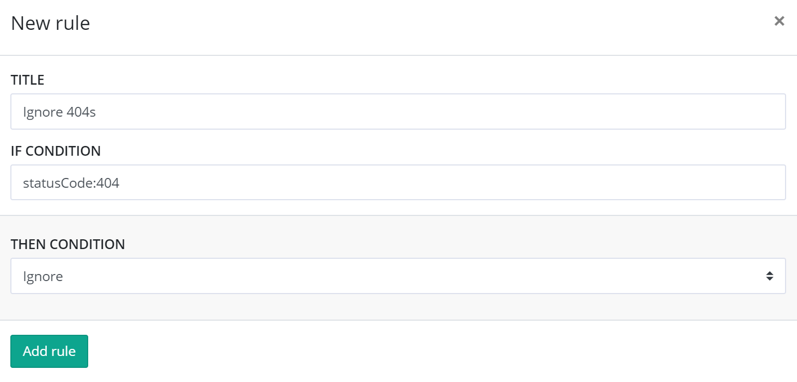
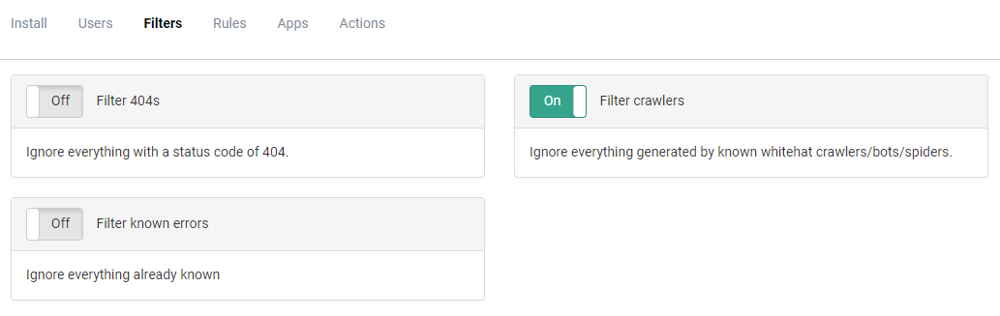
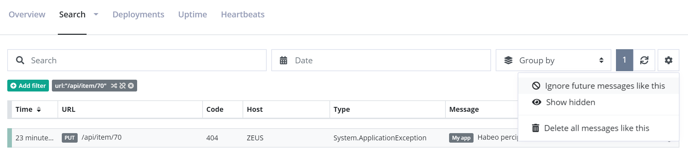
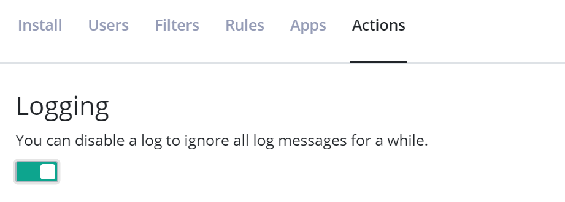
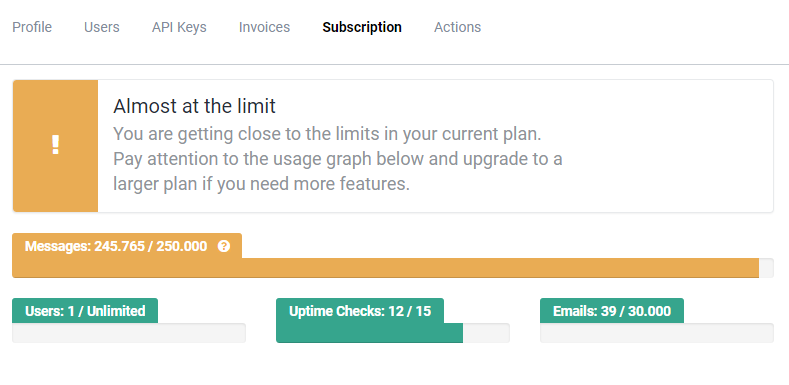
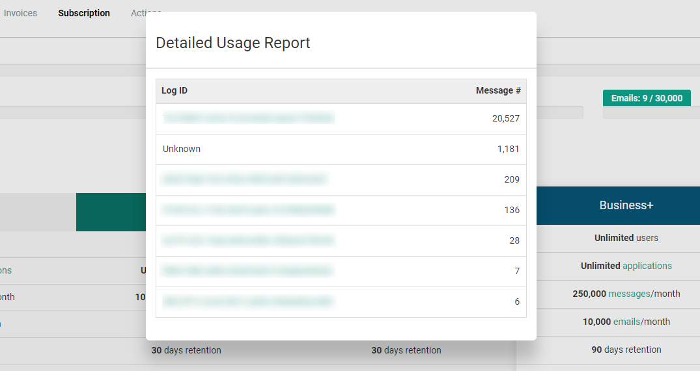

Tips and tricks to stay below your message limit
Each plan on elmah.io include a maximum number of messages per month. The number of messages are calculated from how many times your applications have called our API and successfully stored a message (in most cases messages equals errors). Deleting messages either one by one or in batches are fully supported, but do not result in a decrease in the current message count. Our costs are primarily around receiving, indexing and notifying about messages, why we cannot allow someone on a lower plan like the Small Business, to log millions and yet millions of messages and then just clean up regularly. We're sure that everyone understand the challenge here.
With that said, we want to help you stay within your message limits. Luckily, there's a lot of ways to limit messages. This article contains a list of the most common tactics to staying below your message limit.
Ignore Rules
The easiest way to limit logged messages, is by ignoring some of them. Ignored messages do not count towards the message limit. Message rules can be configured through the Rules tab on the Log Settings view.
Rules consist of a query and an action. The query can either be a full-text query or written using Lucene Query Syntax. To create a new ignore rule, input a query on the Rules tab:

All new rules are created with an ignore action as default, why you don't need to click the Then link for this type of rules. The example above, ignore all messages with a status code of 404.
For more information about the possibilities with rules, check out Creating Rules to Perform Actions on Messages.
Filters
Filters are basically Ignore Rules in disguise. With Filters we have collected the most common ignore rules and made them available as a set of checkboxes. To ignore all message matching a specific filter, enable one of the checkboxes on the Filters tab on Log Settings:

If your website is available for everyone to access, ignoring known crawlers, bots and spiders is a good idea in most cases. Filtering below warning can also be a good idea, unless you are using elmah.io to log all log severities from a logging framework like NLog or Serilog.
If staying within the message limit is more important than getting the full picture of the errors generated by your website, there are a couple of filters that will help you with that. The Filter Known filter will make sure that only one instance of each error is logged. If you still want to log multiple instances but stop at some point, the Filter Burst filter will stop logging after 50 instances logged. Finally, you can set a limit on how many errors you want logged to a specific log each month, by inputting a number in the Filter Limit filter. Please notice that using any of these last three filters, will cause inconsistent results in different graphs and features (like the spike detection). They can solve the problem of logging too much, but it is a sign that you are logging more data than included in your plan. A perfectly valid solution is to purchase a larger plan, get your logging under control (maybe even fix some errors?) and then downgrade when you are ready.
Ignore future messages like this
Sometimes you may find yourself on the Search tab with a search result thinking: "I don't really care about these messages". By clicking the caret next to the query filters, an Ignore future messages like this option is revealed:

Clicking this option automatically ignore any future messages matching your current search result.
Disable logs
Each log can be disabled from Log Settings:

Disables logs are shown as semi transparent on the dashboard, to help you remember that you disabled a log.
Client-side message filtering
Most of our clients support client filtering. All of the filtering options described above, filters messages server-side. This means that your application still communicates with elmah.io's API and need to wait for that to answer (even fore ignored messages).
Filtering client-side from ASP.NET, MVC, Web API and other frameworks built on top of ASP.NET, can be done using ELMAH's (the open source project) filtering feature. To filter message, create a method named ErrorLog_Filtering in the Global.asax.cs file:
void ErrorLog_Filtering(object sender, ExceptionFilterEventArgs args)
{
var httpContext = args.Context as HttpContext;
if (httpContext.Response.StatusCode == 404)
{
args.Dismiss();
}
}
If you're using ASP.NET Core, our client supports the OnFilter action:
services.AddElmahIo(o =>
{
...
o.OnFilter = message =>
{
return message.StatusCode == 404;
};
});
Monitor current usage
We send you an email when you have used 90% of your limit and again when reaching the limit. Monitoring your usage is a good supplement to the emails, since you are able to react early on (by upgrading, ignoring errors or something else). There's a usage graph on the Organisation Settings view:

By clicking the question mark next to the counter, you will be able to see which logs that are taking up space:

Fix bugs
Seeing the same error over and over again? Maybe the best idea is to fix it :) I mean, that's the whole purpose of elmah.io: to help you fix bugs. And remember, the less bugs you have, the cheaper elmah.io gets. The ultimate motivation!
Purchase a top-up
Sometimes, a spike in errors can be caused by unexpected events like a blackhat bot deciding to bombard your site with requests or a junior dev on your team accidentally enabling verbose logging. In these cases, purchasing a top-up may be a better solution than permanently upgrading your plan. Top-ups can be purchased from your subscription, when you reach 90% of your included messages. Top-ups are purchased in bundles of 25,000 messages, valid for the rest of the calendar month.
Upgrading to the next plan
If you constantly go over the limit, you have probably reached a point where you will need to upgrade to a larger plan. You can upgrade and downgrade at any time, why upgrading a few months (until you get errors under control) and then downgrade again, is perfectly fine.
This article was brought to you by the elmah.io team. elmah.io is the best error management system for .NET web applications. We monitor your website, alert you when errors start happening and help you fix errors fast.
See how we can help you monitor your website for crashes Monitor your website